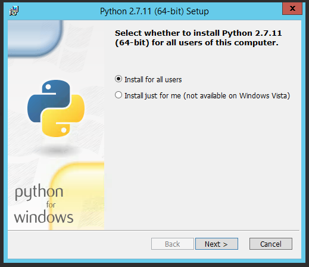
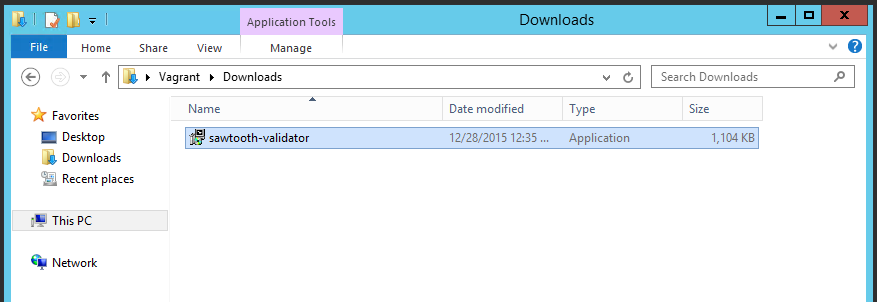
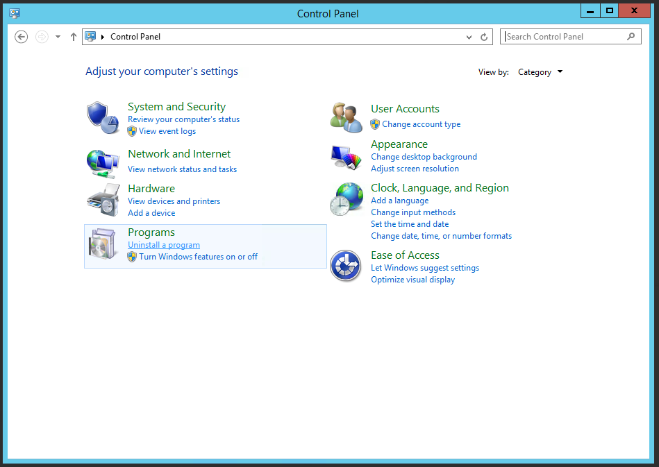

Installation on Windows¶
Prerequisites¶
To run the SawtoothLake Validator you will need the following:
- Sawtooth-validator.exe
- Python 2.7.11 Windows x86-64 MSI Installer (python-2.7.11.amd64.msi)
- Python Extensions for Windows exe installer (pywin32-219.win-amd64-py2.7.exe)
Note
Python Extensions for Windows is only necessary if you intend to run SawtoothLake Validator as a Windows service.
Download Python Windows x86-64 MSI Installer (python-2.7.11.amd64.msi) from:
Download Python Extensions for Windows (pywin32-219.win-amd64-py2.7.exe) from:
Install Tools¶
Install Python¶
Navigate to the directory where you saved python-2.7.11.amd64.msi and double click it to start the installer.
- Make sure “Install for all Users” is selected and then click Next >
- Accept the default path of
C:\Python27by clicking Next >
- We don’t need any customizations here. Click Next >
- A progress bar will appear
- The install is complete! Click Finish.
Install Dependencies¶
We’ll need to install a few Python packages using pip.
Open a Powershell window and run the following commmands:
PS C:\Users\username> c:\python27\scripts\pip.exe install cbor
PS C:\Users\username> c:\python27\scripts\pip.exe install colorlog
PS C:\Users\username> c:\python27\scripts\pip.exe install ecdsa
PS C:\Users\username> c:\python27\scripts\pip.exe install pybitcointools
PS C:\Users\username> c:\python27\scripts\pip.exe install twisted
Install Validator¶
You can install SawtoothLake Validator either using the GUI or with an unattended command line mode. We’ll cover both below.
GUI Install¶
- Navigate to the folder containing sawtooth-validator.exe
- Double click sawtooth-validator.exe and a window will appear with a progress bar
- Click close once the installer finishes
Command Line Install¶
Open Powershell, navigate to the folder containing sawtooth-validator.exe and start the install
PS C:\Users\username> cd .\Downloads
PS C:\Users\username\Downloads> .\sawtooth-validator.exe /S
Whichever way you chose to install, you should now see the Validator
files have been placed in C:\Program Files (x86)\Intel\sawtooth-validator.
Install As a Service¶
Install the Validator code using either the GUI or command line options above.
- After the install is complete, open a Powershell window and set some system environment variables:
PS C:\Users\username> [Environment]::SetEnvironmentVariable("Path",$Env:Path + ";c:\python27;", "Machine")
PS C:\Users\username> [Environment]::SetEnvironmentVariable("PYTHONPATH", "C:\Program Files (x86)\Intel\sawtooth-validator\lib\python\", "Machine")
- Rename txnvalidator so Python Extensions can import it:
PS C:\Users\username> cd "C:\Program Files (x86)\Intel\sawtooth-validator\bin"
PS C:\Program Files (x86)\Intel\sawtooth-validator\bin> mv .\txnvalidator .\txnvalidator.py
- Install the Validator sevice:
PS C:\Program Files (x86)\Intel\sawtooth-validator\bin> python.exe .\txnvalidator.py install
Installing service SawtoothValidator-Service
Service installed
- Open the Windows services console to verify that the service was installed successfully.
PS C:\Program Files (x86)\Intel\sawtooth-validator\bin> services.msc
Run Validator¶
The PYTHONPATH environment variable needs to set and the the Python directory needs to be added to our path before running Validator. Open Powershell and run the following:
PS C:\Users\username> $env:PYTHONPATH += ";C:\Program Files (x86)\Intel\sawtooth-validator\lib\python\"
PS C:\Users\username> $env:PATH += ";c:\python27;"
Start txnvalidator by navigating to C:\Program Files (x86)\Intel\sawtooth-validator\bin
and running:
PS C:\Users\username> cd "C:\Program Files (x86)\Intel\sawtooth-validator\bin"
PS C:\Program Files (x86)\Intel\sawtooth-validator\bin> python .\txnvalidator --config simple.js --url **none**
You should see the logfiles being updated in
C:\Program Files (x86)\Intel\sawtooth-validator\logs.
As a Service¶
In order to run Validator as a Windows service a few changes need to be made to the config files.
PS C:\Users\username> cd "C:\Program Files (x86)\Intel\sawtooth-validator\conf"
PS C:\Program Files (x86)\Intel\sawtooth-validator\conf> mv .\simple.js .\settings.js
Open settings.js in your preferred editor and change the “LedgerURL” value to “**none**”:
{
"HttpPort" : 0,
"Host" : "localhost",
"Port" : 0,
"NodeName" : "base000",
"LedgerURL" : "**none**",
The service is set to Manual start by default. Run the below command to start it:
PS C:\Users\username> Start-Service SawtoothValidator-Service
Configuring the Validator¶
By default, the validator will start up as a ‘base’ validator. It will not reach out to other validator nodes, and it will initialize a new set of data files in the data directory, C:\Program Files (x86)\Intel\sawtooth-validator\data\ by default.
In order to join the new validator to an existing network of validators, the “LedgerURL” setting must be changed in the configuration file to point to a valid URL for an existing http validator in the network.
{
"HttpPort" : 0,
"Host" : "localhost",
"Port" : 0,
"NodeName" : "node000",
"LedgerURL" : "http://base-validator.domain.com:8800/",
It is also important to set the “NodeName” value to a unique value based on your naming convention. The node’s key, which must be generated using the command sawtooth keygen, must be named {node name}.wif and placed in the keys directory.
Several other settings are important for correct functionality of the new validator node. The configuration file must contain the list of valid transaction families supported by the validator network.
"TransactionFamilies" : [
"IntegerKey",
"MarketPlace"
]
Lastly, the “AdministrationNode” setting must contain the address of the administration node on the validator network. This instructs the validator to listen for and act on administrative transactions (like shutdown) received from the administration node. The administration node address can be found in the keys directory on the adminstration node in a file called {node name}.addr.
"AdministrationNode" : "19ns29kWDTX8vNeHNzJbJy6S9HZiqHZyEE"
Security¶
You can instruct the validator to check whether or not the validator is being run under a user with elevated privileges (root in Linux, or administrator in Windows). If elevated privileges are being used, the validator stops with a warning.
To run the privilege level check, change the “CheckElevated” setting to “true” in the configuration file:
"CheckElevated" : true
This setting applies only to Linux and Windows operating systems.
Uninstallation¶
Just like with installation, SawtoothLake Validator can be uninstalled either using the GUI or with an unattended command line mode.
Note
If you installed SawtoothLake Validator as a service, please run the service removal commands below before running uninstall.exe
GUI Uninstall¶
- Open the Control Panel and select “Uninstall a Program”
- Once the Programs and Features Window appears, double click “Intel - sawtoothvalidator - Sawtooth”
- Click close once the uninstaller finishes
Command Line Uninstall¶
- Open Powershell, navigate to the folder containing uninstaller.exe and start the install:
PS C:\Users\username> cd 'C:\Program Files (x86)\Intel\sawtooth-validator'
PS C:\Program Files (x86)\Intel\sawtooth-validator> .\uninstall.exe /S
However you chose to uninstall, you should now see the Validator
files have been removed from C:\Program Files (x86)\Intel\sawtooth-validator.
You may see some remaining directories. The uninstaller chooses not to remove
the conf, data, or logs directories if they aren’t empty. You can back up any
remaining files and remove the leftover directories by hand.
Service removal¶
PS C:\Program Files (x86)\Intel\sawtooth-validator\bin> python.exe .\txnvalidator.py remove
Removing service SawtoothValidator-Service
Service removed